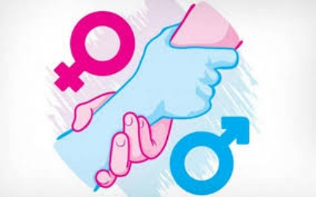

Lo cierto es que, aunque la legislación establece el principio de igualdad y prohíbe cualquier tipo de discriminación, la igualdad real y efectiva no existe o no se ha alcanzado en todas los ámbitos de la sociedad. Lo podemos ver, por ejemplo, en la persistencia de la brecha de género en el ámbito laboral (según datos del Índice de ClosinGap, esta aumentó un punto en 2021, hasta alcanzar el 36,7%), en los datos sobre corresponsabilidad de género (que siguen mostrando que son mayoritariamente las mujeres las que se ocupan del cuidado del hogar y los hijos o familiares dependientes), de la falta de mujeres en cargos de dirección en las empresas y en otros muchos ejemplos de desigualdad de género (la desigualdad en las pensiones, la segregación vertical y horizontal, la temporalidad, la brecha salarial, etc.).

Hemos visto como igualdad legal e igualdad real no son sinónimos, ni tener la primera garantiza tener la segunda; para alcanzar la igualdad real y efectiva es necesario trabajar sobre ella, tanto desde la esfera pública como desde la esfera privada, promoviendo leyes que garanticen esa igualdad de oportunidades y trato para que las mujeres puedan partir desde el mismo punto que los hombres y dejen de producirse las desigualdades que aún arrastramos en la sociedad. Cuando mujeres y hombres puedan realmente acceder en igualdad de condiciones a los recursos, participar en todos los ámbitos de la sociedad y formar parte de las tomas de decisiones de forma paritaria, podremos hablar entonces de igualdad real y efectiva.

Desde la instauración del sistema patriarcal, el significado de igualdad ha pasado por varios estadios que se pueden clasificar atendiendo a la perspectiva desde la que se enfoca: jurídica, social, económica o de oportunidades (Sartori, 2012).23 ene 2023
